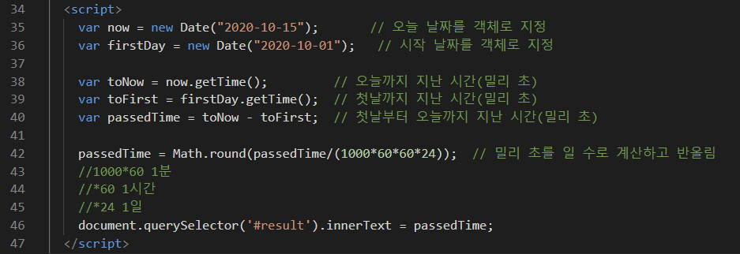
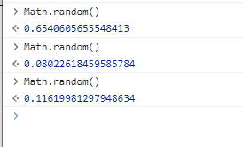
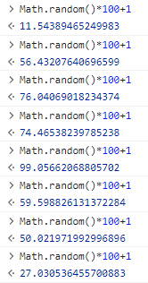
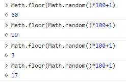
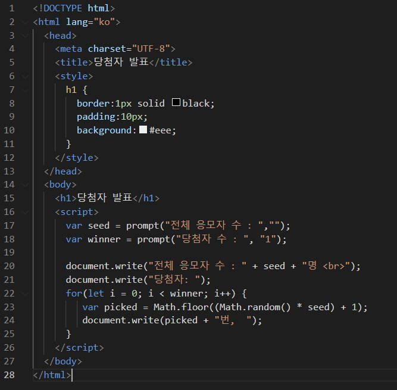

#
4. 객체
#
목차
1. 객체의 이해 1.1. 객체 생성하기-예제[01] 1.2. 인스턴스 만들기-예제[02]
2. 내장객체 2.1. Array객체 2.2. Array객체로 배열 만들기-예제-[03] 2.3. Array 객체의 메서드 (method) 2.3.1. 배열에 대해 알아보자
2.4. Date객체-[04] 2.4.1. 현재날짜출력하기-예제 2.4.2. 특정날짜출력하기-예제 2.4.3. 자바스크립트의 날짜,시간 입력방식-예제 2.4.4. Date 객체의 메서드 2.4.5. 날짜계산하는 프로그램 만들기-예제
2.5. Math 객체-[05] 2.5.1. Math객체의 프로퍼티 2.5.2. Math객체의 메서드 2.5.2.1. 이벤트당첨자뽑기프로그램만들기 2.5.2.2. 문제: 여러명의 당첨자를 뽑아주세요
3. BOM(브라우저객체) 3.1. 브라우저관련 주요 내장객체 3.2. window 객체의 프로퍼티 3.3. window객체의 메서드 3.3.1. open() 3.3.1.1. 팝업창 만들기-예제
3.4. navigator 객체 3.4.1. 웹브라우저와 렌더링 엔진
3.5. location 객체 3.5.1. 사이트위치 고정하기-예제
3.6. screen 객체 3.6.1. 화면의 너비와 높이 알아내기-예제
3.7. 마무리문제1 3.8. 마무리문제2
#
1. 객체의 이해
자바스크립트엔 여덟 가지 자료형이 있습니다. 이 중 일곱 개는 오직 하나의 데이터(문자열, 숫자 등)만 담을 수 있어 '원시형(primitive type)'이라 부릅니다 객체형(Reference type)은 원시형과 달리 다양한 데이터를 담을 수 있습니다. 키로 구분된 데이터 집합이나 복잡한 개체(entity)를 저장합니다 🔗모던자바스크립트
#
1.1. 객체 생성하기-예제[01]
var dog = new Object();
dog = {
/* 키:값 */
name: '망고',
features: '말티즈',
};
document.write(`<h1>${dog.name}</h1>`);Object() 생성자 함수를 사용해서 생성할수 있습니다.
🔗MDN
const baby = {
name: '망고',
features: '말티즈',
};
document.write(`<h1>${baby.features}</h1>`);{ } 를 사용해서 생성할수 있습니다.
const pet = {
name: '망고',
eat: function (food) {
//메소드
alert(this.name + '는 ' + food + '를 먹습니다.');
},
};
pet.eat('간식');객체 내에 선언된 함수를 메소드 라고 합니다.
#
1.2. 인스턴스 만들기-예제[02]
자바스크립트에서 제공하는 내장 객체를 꺼내어 사용해 보겠습니다. 자바스크립트는 개발자들이 자주 사용하는 요소들을 미리 객체로 정의해 놓았는데 그것을 내장 객체 라고 합니다. 예를들어 날짜, 시간과 관련된 프로그램을 개발하려면 자바스크립트의 Date 객체를 가져와서 사용할수 있습니다.
자바스크립트에서 내장객체는 참조형태로 사용해야 합니다. Date 객체를 꺼내어 사용시 객체 자체를 사용하면 안되고 인스턴스의 형태로 만들어서 사용해야 합니다. 마치 나루토의 그림자 분신술 처럼 본체는 안전하게 보관되어 있는 상태에서 분신만 소환하는 것이죠.
객체가 사용하는 분신술을 자바스크립트에선 인스턴스 라고 하며 자바스크립트는 인스턴스에 식별자를 붙여서 사용합니다.
인스턴스를 생성하는 문법은 아래와 같습니다.
기본형
new 객체명
<!DOCTYPE html>
<html lang="ko">
<head>
<meta charset="UTF-8" />
<meta
name="viewport"
content="width=device-width, initial-scale=1.0"
/>
<title>What time is it?</title>
<style>
body {
font-size: 2em;
text-align: center;
}
</style>
</head>
<body>
<script>
var now = new Date();
document.write('현재 시각은 ' + now); // 현재 날짜와 시간 표시하기
</script>
</body>
</html>var now = new Date();
document.write('현재 시각은 ' + now.toLocaleString()); // 로컬 형식으로 표시하기01번의 16-17번 라인의 코드를 위와 같이 변경하면 국내 시간으로 변경됩니다.
.toLocaleString() 은 Date() 객체가 갖고 있는 현지 시각을 표시하는 메서드 입니다.
#
2. 내장객체
#
2.1. Array객체
Array 객체는 자바스크립트의 여러가지 내장 객체중에서 배열을 다룹니다. 배열은 자바스크립트에서 자주 사용하는 자료형 이므로 Array 객체의 주요 프로퍼티와 메서드를 숙지하는 것이 중요합니다.
#
2.2. Array객체로 배열 만들기-예제-[03]
내장객체는 인스턴스를 생성하여 사용할수 있었습니다. Array 객체의 인스턴스를 생성하여 배열을 만들어 봅시다.
let number1 = new Array(); //배열의 크기를 지정하지 않음
let number2 = new Array(4); //배열의 크기를 지정함let number3 = [1, 2, 3, 4, 5];
let number4 = Array(1, 2, 3, 4, 5); //배열의 크기를 지정함let numbers = ['one', 'two', 'three', 'four'];
for (i = 0; i < numbers.length; i++) {
document.write('<p>' + numbers[i] + '</p>');
}
#
2.3. Array 객체의 메서드 (method)
Array 객체는 많은 메서드를 가지고 있습니다. 이중 주요 메서드를 정리했습니다.
더 자세한 내용은 MDN 레퍼런스를 참고해보세요.
#
2.3.1. 배열에 대해 알아보자
#
2.4. Date객체-[04]
Date 객체는 날짜와 시간정보를 나타낼수 있습니다.
#
2.4.1. 현재날짜출력하기-예제
//Date 객체로 현재 날짜 나타내기
new Date();
console.log(new Date());
#
2.4.2. 특정날짜출력하기-예제
let date = new Date('2020-02-25');
console.log(date);
date = new Date('2020-02-25T18:00:00');
console.log(date);
#
2.4.3. 자바스크립트의 날짜,시간 입력방식-예제
Date 객체를 사용하여 날짜와 시간을 지정하려면 자바스크립트가 인식할수 있는 날짜와 시간 형식으로 작성해야 합니다. 자바스크립트에서 주로 사용하는 날짜와 시간 입력 방식을 알아보겠습니다.
날짜 입력형식의 YYYY 는 연도를 MM 은 월을 DD는 일을 시간 입력형식에서 HH는 시, MM은 분 , SS는 초 를 뜻합니다.
YYYY-MM-DDYYYY-MM-DDTHH...
/* YYYY-MM-DD */
let date = new Date('2020');
console.log(date);
date = new Date('2020-02');
console.log(date);
date = new Date('2020-03');
console.log(date);
/* YYYY-MM-DDTHH */
date = new Date('2020-03T18:00:00');
console.log(date);
#
2.4.4. Date 객체의 메서드
#
2.4.5. 날짜계산하는 프로그램 만들기-예제
<div id="container">
<h1>책 읽기</h1>
<p>
<span
class="accent"
id="result"
></span
>일 연속으로 <br />
책 읽기를 달성했군요.
</p>
<p>축하합니다!</p>
</div>#container {
margin: 50px auto;
width: 300px;
height: 300px;
border-radius: 50%;
border: 2px double #222;
background-color: #d8f0fc;
text-align: center;
}
h1 {
margin-top: 80px;
}
.accent {
font-size: 1.8em;
font-weight: bold;
color: red;
}😁

#
2.5. Math 객체-[05]
수학 계산과 관련된 메서드가 많이 포함되어 있는 객체입니다. 난수생성이나 반올림 계산을 해야 할 경우 많이 사용합니다. Math 객체는 별도의 인스턴스를 생성하지 않고 사용해도 됩니다. 아래의 기본 문법을 참고하세요.
기본형
Math.프로퍼티명
Math.메서드명
#
2.5.1. Math객체의 프로퍼티
Math객체의 프로퍼티는 항상 정해진 값을 갖고 있습니다.
#
2.5.2. Math객체의 메서드
#
2.5.2.1. 이벤트당첨자뽑기프로그램만들기
<h1>당첨자 발표</h1>h1 {
border: 1px solid black;
padding: 10px;
background: #eee;
}콘솔창에
Math.random()을 입력후 반환값을 확인합니다. 실행할때 마다 매번 0~1 사이의 다른수가 반환됩니다. 1100 사이의 난수(정의된 범위 내에서 무작위로 추출된 수)를 출력해봅시다. 1단계에서 확인한 값에 100을 곱하면 약 0.00099.999 범위의 값이 반환 될 것 입니다. 이 결과에 1을 더합니다.
Math.random()*100+1소수점 이하는 버리고 출력하는 메서드를 적용합니다.
Math.floor(Math.random()*100+1)코드 완성하기
const seed = prompt("전체 응모자 수 : ",""); const picked = Math.floor((Math.random() \* seed) + 1); document.write(`전체 응모자 수 : ${seed} 명 <br> 당첨자 : ${picked} 번`);
#
2.5.2.2. 문제: 여러명의 당첨자를 뽑아주세요
🐨

#
3. BOM(브라우저객체)
자바스크립트 사용시 특정 사이트로 이동하거나 새 탭을 여는 등 웹 브라우저와 관련된 여러가지 효과를 제작할수 있습니다. 이런 작업이 가능한 이유는 자바스크립트 내에 웹 브라우저와 관련된 여러 객체가 미리 정의 되어있기 때문입니다.
#
3.1. 브라우저관련 주요 내장객체
#
3.2. window 객체의 프로퍼티
window 객체는 웹브라우저 상태를 제어하며 자바스크립트의 최상위에 있습니다. 그래서 자바스크립트의 모든 객체는 window 객체 안에 포함됩니다.
#
3.3. window객체의 메서드
#
3.3.1. open()
기본형
window.open(경로,창이름,창옵션)
- 경로: 팝업창에 표시할 문서나 사이트의 경로(주소)를 나타냅니다.
- 창이름: 팝업창의 이름을 지정하면 항상 이 창에 팝업 내용이 나타나도록 할수 있습니다. 미 지정시 팝업창이 계속 새로 나타납니다.
- 창옵션: left, top 속성을 사용해 위치를 정하거나 width, height 속성을 사용해 크기를 지정할수 있습니다. 미지정시 팝업창은 화면의 좌측상단에 표시됩니다.
#
3.3.1.1. 팝업창 만들기-예제
팝업이 차단된 브라우저의 알림창을 표시하는 팝업을 작성해보겠습니다.
코드1을 복사하여 팝업을 열 페이지를 준비합니다.
<!DOCTYPE html>
<html lang="ko">
<head>
<meta charset="UTF-8" />
<title>공지사항</title>
<style>
#content {
border: 2px double skyblue;
border-radius: 10px;
padding: 10px;
}
ul {
margin-left: 15px;
list-style-type: none;
}
ul li {
margin: 10px 5px;
}
button {
position: absolute;
bottom: 20px;
right: 20px;
}
</style>
</head>
<body>
<div id="content">
<h1>공지사항</h1>
<ul>
<li>항목 1</li>
<li>항목 2</li>
<li>항목 3</li>
<li>항목 4</li>
<li>항목 5</li>
</ul>
<button>닫기</button>
</div>
</body>
</html>notice.html 의 button 에 close 함수 작성
<button onclick="javascript:window.close();">닫기</button>
#
3.4. navigator 객체
navigator객체는 웹브라우저의 버전을 포함하여 플러그인 설치정보나 온/오프라인 등의 여러 정보가 담겨 있습니다. 이 정보는 사용자가 수정할수 없으며 가져와서 보여줄수만 있습니다.
#
3.4.1. 웹브라우저와 렌더링 엔진
웹 브라우저의 종류가 다양해짐에 따라 사용자의 웹브라우저에서 똑같이 동작하는 웹문서를 개발할 필요성이 생겼습니다. 여러 웹브라우저를 고려하여 개발하는 것은 웹 개발자에게 어려운 숙제이기도 합니다. 여러 웹브라우저를 고려할때 가장 먼저 생각해야 할 부분은 렌더링 엔진 입니다. 아직 표준화 되지 않은 CSS 속성일 경우 벤더프리픽스를 지정합니다. 이유는 브라우저 마다 HTML, CSS 를 해석하는 렌더링 엔진 (rendering engine)이 다르므로 프리픽스를 붙여 브라우저를 구별하는 것인데요.
자바스크립트 역시 웹 브라우저 마다 엔진이 서로 다릅니다. 그래서 같은 HTML5기술을 사용해서 만든 사이트에 접속 하더라도 웹브라우저 마다 보여주는 효과와 성능의 차이가 있을수 있습니다.
콘솔창에 아래와 같이 입력하여 리턴값을 확인해보자
navigator.userAgent
#
3.5. location 객체
location 객체는 브라우저의 주소표시줄에 관련된 정보를 제공합니다. 현재 문서의 URL 주소 정보가 들어있는데 이 정보를 편집하면 현재 브라우저 창에서 열어야할 사이트나 링크를 지정할수 있습니다. location 객체의 메서드는 브라우저의 새로고침 역할을 하는 reload() 메서드와 현재 창에서 다른 문서나 사이트를 보여주는 replace() 메서드가 유용하게 활용됩니다.
#
3.5.1. 사이트위치 고정하기-예제
<div id="container">
<h2>location 객체</h2>
<div id="display"></div>
<button>홈페이지로 가기</button>
</div>#container {
width: 500px;
margin: 10px auto;
}
#display {
margin-top: 10px;
padding: 10px;
border: 1px solid #222;
box-shadow: 1px 0 1px #ccc;
}
p {
font-size: 1em;
}
button {
margin-top: 20px;
text-align: center;
}
#
3.6. screen 객체
사용자의 화면 크기나 정보를 갖고 있는 screen 객체를 알아 보겠습니다.
#
3.6.1. 화면의 너비와 높이 알아내기-예제
document.write('<p><b>screen.availWidth : </b>' + screen.availWidth + '</p>');
document.write('<p><b>screen.availHeight : </b>' + screen.availHeight + '</p>');
document.write('<p><b>screen.width : </b>' + screen.width + '</p>');
document.write('<p><b>screen.height : </b>' + screen.height + '</p>');